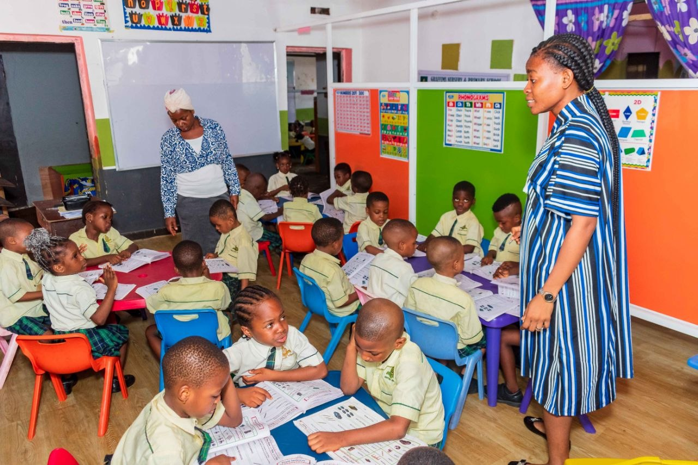

Our Campus
Learning Facilities
Our campus is equipped with standard facilities designed to support every dimension of student learning and development.

Science Laboratories
Fully equipped Physics, Chemistry, and Biology labs with modern apparatus for hands-on practical learning.

Computer Laboratory
A 40-workstation computer lab with internet access, used for ICT classes and self-directed learning.

School Library
A well-stocked library with good amount of titles covering all subjects, open before and after school hours.

Modern Classrooms
Well-ventilated, comfortable classrooms with proper seating, whiteboards, and adequate natural lighting.